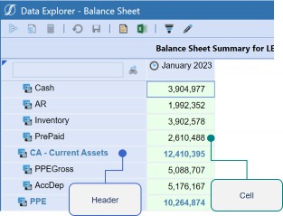
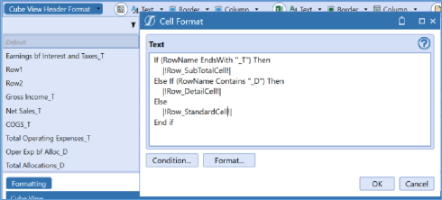
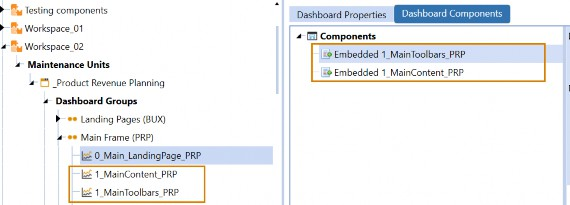
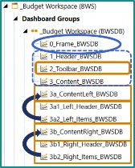

What Have We Learned?
We started this book with one mission in mind: to craft the best User Experience in the OneStream application. This is not always an easy challenge because we have so many different User types.
We know about the flexibility of OneStream, of course, and our application could have been implemented for many different reasons and must continue to grow as the business evolves. Your Planning application may pivot to include Consolidations, for example, or it may grow to encompass Operational Planning, or perhaps some solutions found in the MarketPlace, such as People Planning. Building a User Experience for all these situations requires a design that can pivot and accommodate different directions.
But the versatility of our application is not the only hurdle we have to cross. What about the Users? Yes, you have heard so much about all the types of Users we need to address! From the person keying into a Form, to the Administrator running Calculations, to the Executive searching for quick ratios, we have a lot of Users to consider, and each of them will behave differently. On top of that, as OneStream continues to grow, the software has flexed to handle Users who span multiple industries, each of whom have their own unique requirements. We must all do our part to stay up to date with what the software can do and what our community has found to be the most effective practice!
One thing that we did not touch on much in this book is overall application design and performance. You may or may not be interested in this given your position, but the first thing that can greatly hurt the User Experience is poor application performance. I would be remiss not to mention the underlying items that every application designer should be accountable for and their impact on the tools we have discussed. Having an application with proper metadata and Workflow design – that puts the Data Unit first – is a must, therefore. If your foundation is not solid, the other items we learned about in this book will not be able to shine. If you are someone who is starting to design applications, I would recommend looking at:
The Designing an Application Course on Navigator (OneStream’s online learning portal)
The OneStream Foundation Handbook
Being an active part of ONECommunity
These three resources are a major help to anyone wishing to take their knowledge to the next level and truly understand how the application ‘ticks’. If you are more interested in reporting tactics and techniques, I would recommend using ONECommunity as you get stronger and have more questions. We cannot cover everything in our materials, but what makes up the OneStream Ecosystem is the creative and passionate people who work together to fight new challenges and uncover new ways to work in the software. ONECommunity is a very flexible tool, and there is a lot you can learn to do with it.
Now that this book is drawing to a close, let’s take a little time to review some of the items we have covered.
What Have We Learned?
The Moving Pieces
After we discussed the different types of Users that we must cater for, we learned how we can craft the best User Experience for them by specifically looking at our reporting tools. A lot of these tools can also be used to calculate or bring data into the system as well. These options are Cube Views,
Excel Add-in/Spreadsheet, Extensible Documents, Report Books, and Dashboards. No matter what we choose, we must always consider the design of our metadata and the location of our data when crafting Reports.
What Have We Learned? › The Moving Pieces
Cube Views
First up, Cube Views – our simple way to pull data residing in the Cube. Cube Views are easy to get started with and can be incorporated into many areas of the OneStream application. Typically, they will be your best way to handle most of your financial reporting requirements because they respond well to these challenges:
They are easy to build and maintain.
They can be heavily formatted.
They are typically the most performant option.
They can be easily accessed across the application.
They can be viewed in multiple formats (Data Explorer Grid, Microsoft Excel, OneStream Spreadsheet, PDF Report).
What Have We Learned? › The Moving Pieces
Excel Add-in/OneStream Spreadsheet Tool
Then, we covered the Excel Add-in/Spreadsheet tool. This a fan favorite for many of our clients either because they have worked with other add-ins in the past, or they just love working with Excel! The Spreadsheet tool is a nice way to bring the Excel Add-in into the software; as a Consultant, I was often on different versions than my client, and it allowed me to maneuver and train End-Users quickly. I have also incorporated Spreadsheet into Dashboards and Forms in the past to give a more interactive option for Users. The benefits we discussed for Excel Add-in/Spreadsheet are as follows:
Allows you to grow your population of builders.
Multiple options as to how you want to query data.
Greatest flexibility with formatting and Calculations.
What Have We Learned? › The Moving Pieces
Dashboards
We then introduced Dashboards, the reporting tool that we spent a great deal of time discussing in this book, alongside many examples. Dashboards are so much more than a reporting tool; they are something that implementors will often use to create a dynamic User Experience in the application.
Like Cube Views and the Excel Add-in, they are often used for reporting data and data entry, but more than that, they provide great flexibility with their reporting options and how they can run tasks.
Dashboarding is something that is undergoing several changes in the product currently, and I would keep your eyes peeled for the latest releases. With 7.3, we introduced the concept of Workspaces, which changes how we see the page and how items are organized within Dashboards. From version 8 and beyond, there will no doubt be many other new features and enhancements added to the Dashboarding Engine. As this concept develops, it will force us to extend our perception of Dashboards and their capabilities. But for now, here are the key benefits of working with this tool:
Dashboards allow you to integrate multiple reporting/data entry options.
They are necessary when querying non-Cube data.
They can run ‘jobs’ (e.g., Consolidation, Calculation, Translation, Business Rules, etc.).
What Have We Learned? › The Moving Pieces
Extensible Documents
A lesser-known tool, Extensible Documents, was also briefly discussed in this book. Extensible Documents allow you to create a PowerPoint, Excel, and/or Word document that can display real-time OneStream data, Cube Views, Charts, or Excel Reports, and which can even refresh based on User selection.
Extensible Documents tend to be used for specific purposes; that is why I recommend giving them a try so you know when they can get you out of a pinch. They are also a great way to collect and integrate your other reporting options.
What Have We Learned? › The Moving Pieces
Report Books
In the spirit of integrating reporting options, we also have Report Books. Report Books are excellent if you are trying to create financial or managerial reporting packages. And, as you have learned, they are very easy to build. So, here are some reasons to use Report Books:
You can add flexibility to your reporting options.
They can be ‘shipped’ via email to Users through the Parcel Service solution.
What Have We Learned?
Out-of-the-Box Basics
Besides our reporting tools, what other items in the software can we take advantage of to drive the User Experience? These items are not mutually exclusive, which is why we are also trying to promote an application design where all items are carefully thought through.
Because of this, we wanted to explore what gets brought to the User through the OnePlace Navigation Pane. This comes down to some of the tools that require no configuration, our Workflow design, and where our reporting tools (or, more commonly, data entry options) can be plugged into the User Experience. Many of us can forget that our End-Users rarely have access to items outside the OnePlace Pane, so we want to curate a flow that ties all the things we created into something that drives the best experience for them. Therefore, we broke this chapter down into the three areas of OnePlace: Workflow, Cube Views and Dashboards, and Documents.
What Have We Learned? › Out-of-the-Box Basics
Workflow in OnePlace
Workflow is the crux of your OneStream application and the place where you can build your User Experience. Therefore, the Workflow sometimes takes the longest amount of time to get right in any OneStream implementation; it is a new concept for most people and it is built around the population of Users. So, you must let them interact with it to get it right.
If people struggle with the concept of Workflow, I first explain it as the responsibility structure of your End-User population. You want to build something that is intuitive for your End-User to move through the tasks they need to complete. If that does not quite clear the cobwebs, I go in with, “It’s how you get data into OneStream.” Yes, there are some exceptions to this rule, but start there to build out the pieces in your mind on what you will need for your Workflow. Therefore, we break our Workflow down into three items (or ways) to bring data into OneStream:
Import
Forms
Adjustments
Let’s start first with Import. Not all End-Users will be importing data and this key fact is something you want to consider when designing your Workflow. Because of that, let’s ask ourselves who is importing data and what would be helpful for them to see. OneStream is full of helpful tables that are interactive and which allow you to see the source data that is brought to Stage (or not if you use Direct Load or BI Blend, see the Design and Reference Guide, OneStream Foundation Handbook, or “Designing an Application” Course on Navigator if those terms made your head spin!).
The next way to collect data is through Forms. We spent a lot of time discussing data entry Cube Views and Dashboards, and interacting with Forms is something that MOST of your End-Users will play a role in. Because of this, this step is extremely flexible, and you will want to choose the method and a design that will make the data collection process as seamless as possible. Spell it out for them; make it so obvious that they know what to click and what to input at every point. If they need to put in comments or make an attachment, use your background color or a clever way to name your rows to make this very clear. If they need to run a Calculation, decide if you want this to be something the User should control or not. If they should, a nice prominent button will do the trick.
The final way to collect data through the Workflow is through Adjustments, or what we commonly rename them to: Journals. This is used a little bit less often (typically reserved for post-close adjustments to Actuals loaded into the system) and is not something that all Users will see in their Workflow. Every client is different, though.
Adjustments are commonly employed because of the ability to approve or reject them. Thus, someone can prepare the entire Journal and not post it, therefore not impacting Cube data. In general, they do offer more security settings on the Workflow page, and that may be another reason to consider them. Journals do tend to be misunderstood, though, so I like to take a little time to explain them to my client so they know what they may (or may not) want. Personally, I love the Excel templates that can be found on the MarketPlace for posting Journals – a great way to submit a lot of data easily.
Outside data collection, there are many other things that can be crafted in your Workflow:
A ‘Process’ step to allow your End-User to run Calculations, Translations, Consolidations, or any other data management sequence.
Confirmation Rules to employ appropriate checks that your User should clear. This is where I ask my Admin, “Do you have anything where you always have to chase people down to submit or fix?”
Analysis sections where you can place Cube Views or Dashboards to help your Users along the way.
Review nodes where a different type of User (perhaps a Controller) might review the dependent Workflow Profiles under them.
Certification – something required on every Workflow Profile – to sign off on the work the User has done. This can be adapted to a wide variety of requirements, from questionnaires to quick certify.
Workflow is a hefty topic and something that requires a lot of careful consideration when it comes to design. Knowing what is available to you is key. As we moved through this book, we spent a lot of time discussing our reporting options, and Workflow is the shell that underpins how these items will be brought to the User. Because of this, I cannot stress the importance of a good Workflow design enough. We didn’t get into it that much in this book, but if you are a Consultant hoping to learn more, I strongly advise looking at the “Designing an Application” course. We have a lovely panel from our Architects if you want to hear some of their stories!
What Have We Learned? › Out-of-the-Box Basics
Cube Views and Dashboards in OnePlace
I will not recap too much on Cube Views and Dashboards because we spent a lot of time on these two topics. In general, we can create a repository of your common Cube Views and Dashboards within the OnePlace tab. This is handy for your Users to always access. Personally, I like to display them throughout the Workflow to show Users exactly what they need, when they need it.
What Have We Learned? › Out-of-the-Box Basics
Documents
This item might seem obvious to most, but it is very much underutilized in the field. I have one piece of advice to give you on this section, and it is this… there are security properties in the File Explorer icon that you configure for the documents section – USE THEM!
You are going to end up storing Report Books, Dashboard images, Extensible Documents, etc., in the Documents page. You may or may not want your User accessing these items, accessing them here (specifically), or editing them.
You can also store quick reference cards, End-User training material, or POVs. I like to use this space not just to store all my stuff, but anything that can help acclimate my Users. Therefore, you want to use security to ensure you don’t clutter up the space that you created to make lives less stressful.
What Have We Learned?
Reviewing Building Cube Views
Now, what is a book on the OneStream User Experience without some deep discussions on Cube Views? We spent four chapters discussing, building, and designing Cube Views to give you as many ways to use these simple but intricate artifacts to satisfy your many requirements. Along the way, I hope you developed an appreciation for the Cube View and its versatility!
What Have We Learned? › Reviewing Building Cube Views
Cube View Concepts
We started off by focusing our discussion on the different ways that Cube Views can be used in our application:
As Reports
In Report Books
In Extensible Documents
For data entry
In Dashboards (as Components and data adapters)
A Cube View connection in the Excel Add-in/Spreadsheet
What Have We Learned? › Reviewing Building Cube Views › Cube View Concepts
Reviewing Cube Views as Reports
First, we took Cube Views as lone objects and focused on how they can be built into Reports. We listed out some tips to follow when designing your Report for maintenance and flexibility:
Utilize the Application Properties Standard Reports tab as much as possible.
Set all common formatting as parameters.
Aim for consistency across Reports.
If you use Cube View Extender Rules, ensure your code is commented.
Make your Reports dynamic by prompting for Dimensions. This can often reduce the number of Reports you think you need.
Utilize row and column sharing where possible.
Utilize Member Expansions as much as possible. Resist the urge to pick individual Members.
Explore creating dynamic Calculations in UD8 for common expressions, as opposed to rewriting the same formulas within your Cube Views.
What Have We Learned? › Reviewing Building Cube Views › Cube View Concepts
Reviewing Cube Views and Report Books
Then, we discussed how Cube Views can be added to Report Books. This is where we take the most neatly-formatted and legible Reports and tie them all together into a package for internal and external stakeholders to view. Although Report Books didn’t get their own chapter, we didn’t want to leave you hanging! This is where we went through how to build a Report Book using existing Cube Views if this is something you are new to in OneStream.
What Have We Learned? › Reviewing Building Cube Views › Cube View Concepts
Reviewing Cube Views and Extensible Documents
Extensible Documents, like Report Books, don’t always get the attention they deserve. This is our way of incorporating live OneStream data, Cube Views, Dashboard Reports, or Excel Add-in Reports into our various Microsoft tools.
Here, we learned how to add a Cube View into an Extensible Document. You may do this if you have a cover letter for a Report Book or a PowerPoint presentation that refers to a nicely formatted data grid. Perhaps we need this grid to be dynamic, based on some selection (parameters), and updated as data changes.
What Have We Learned? › Reviewing Building Cube Views › Cube View Concepts
Cube Views for Data Entry
Then, we focused on enabling an existing Cube View for data entry. When designing data entry within OneStream, you can choose if you want to collect data through Forms or Journals. Most of the time, we see people picking Forms, and these can be built through Spreadsheets, Dashboards, or Cube Views. But as we saw, no matter which option you choose, we will likely need to create a Cube View to get started.
Can you recall how we made a Cube View available for data entry? There are three things we needed to adjust:
Set Cube View Can Modify Data to True. This property can be found on the Common properties under the General Settings of the Cube View.
Choose the appropriate Origin Member. Remember, either BeforeAdj or Forms.
Ensure the Cube View is pulling all Base Members.
What Have We Learned? › Reviewing Building Cube Views › Cube View Concepts
Cube Views as Dashboards
We ended up going heavily into Dashboards for the rest of the book, so this section stayed a little light. Cube Views are a really simple way to bring data into our Dashboards, either as a Dashboard Component themselves or as a data adapter.
First, we introduced the concept of using a Cube View as a Dashboard Component. Remember, a Dashboard Component is the type of item that we visualize on the screen when we are running our Dashboards. These can be charts, logos, buttons, combo boxes, or (of course) Cube Views!
Then we talked about Cube Views added to Dashboards as a data adapter. A data adapter is what feeds your various Dashboard Components with data. So, while Dashboard Components are the visual aspects of our Dashboards, data adapters are a bit more ‘behind the scenes’. Our two options here were Cube View MD Data Adapters or Cube View Adapters.
What Have We Learned? › Reviewing Building Cube Views › Cube View Concepts
Cube Views Connections in Excel Add-in/Spreadsheet
Finally, we discussed how Cube Views can be incorporated into our trusty Excel Add-in (or the Spreadsheet tool). Creating a Cube View connection in Excel is much more powerful than simply exporting a Cube View. This provides a live connection into Excel and can be refreshed to ensure you are seeing the latest information in case the data or the Cube View has changed. This is a great tool to use if you are going to make a Spreadsheet Form template or if you want to give Users the option to submit a Cube View Form in Excel.
What Have We Learned? › Reviewing Building Cube Views
Fundamentals of Cube View Design and Build
After we discussed how versatile our Cube Views can be, we sat down and discussed the basics of building one. One important lesson we wanted to learn was to take extra care that our Cube Views are easy to maintain, and other Cube View builders can jump in at any point to share the load.
Thinking ahead – by locking down a repeatable process – we can make any implementation simple and future maintenance more palatable.
What Have We Learned? › Reviewing Building Cube Views › Fundamentals of Cube View Design and Build
Building your First Cube View
After discussing Cube View Groups and Profiles, we started building. So, what do we need to have a functioning Cube View? We will want to build these three items first to see what data the Cube View is querying:
A Cube View POV
Cube View rows
Cube View columns
As we know, we usually don’t just place one Member in our row and one in our columns. This is where our Member Expansions came into play. Member Expansions are a great way to query many Members at one time. This reduces your build time with any Cube View but also reduces your time maintaining the Cube View. It is so important to consider reporting when building your metadata design. See Figure 15.1 for an example.
Figure 15.1
But as we know, sometimes we must incorporate some more difficult Member Expansions to meet our requirements and keep our Cube View tied to our Dimensions. We referred to our Samples and Member Expansions tab to help us build some of these. But the one we spent a lot of time on, and which is very commonly used in the field, is Where clause expressions. Where clauses can tack onto your Member Expansions to provide additional logic in a pinch. This is where we could filter further on Text Properties, Account Types, Intercompany, and so much more!
What Have We Learned? › Reviewing Building Cube Views › Fundamentals of Cube View Design and Build
Dynamic Cube Views
Alright, we have started to feel confident about building the bones of a Cube View. But what can we do to really set our entire project up for success? One great trick is to implement sharing rows/columns and Cube View templates. Both are great ways to essentially cut down the amount of time spent building Cube Views so you can re-use pieces that might be consistent. On top of that, now you can centrally control any future updates! These concepts feed into each other because the prevalence of row and column sharing will require you to make templates.
Next, we talked about how to keep our Cube View dynamic using Parameters and Substitution Variables. We rarely see a Cube View (honestly, if ever!) that is totally static across all its Dimensions. There is usually some sort of User interaction that is required (a selection, maybe, or defaulting off something else) to ensure our Cube View twists and turns to every User’s every wish!
What Have We Learned? › Reviewing Building Cube Views › Fundamentals of Cube View Design and Build
Performance Considerations
We know how to build a Cube View and how to streamline our maintenance but – as we know – one of the things that can ruin a User Experience is bad performance. Here, we remember our Data Unit and discussed the following options when thinking about performance and Cube Views:
Recognize the impact of dynamically-calculated data.
Watch the amount of aggregated data present.
Apply suppression where necessary.
Utilize Cube View paging.
What Have We Learned? › Reviewing Building Cube Views
Cube View Formatting
Formatting a Cube View is something that can become a bit of an art form, and it can get very intricate. Here, we covered some of the basics, but don’t take this as a challenge to learn every single formatting property! Just take things day by day or requirement by requirement.
To get started, we need to cover our Cube View formatting order of operations. Let’s recall:
Application Properties get overridden by the…
Cube View Default formatting gets overridden by the…
Column formatting gets overridden by the…
Row formatting gets overridden by the…
Column overrides gets overridden by the…
Row overrides
What Have We Learned? › Reviewing Building Cube Views › Cube View Formatting
Application Properties
Application Properties is the first item we will want to set and discuss shortly after (or during) any design session. These are commonly forgotten about when implementing OneStream, but there are many important areas to discuss. I recommend reviewing each property and familiarizing yourself with what is available.
Your Dimensions tab, where you can set your User-Defined descriptions, is available when building Cube Views, drill down, and across many places through the Workflow data collection process. Remember, this is a User-friendly way to label your User-Defined (UD) Dimensions because this will be a new concept for every new User in OneStream.
And, of course, the Standard Reports tab. This tab is where you are going to set your general page formatting, but it is also where you alter the header bars and colors you see on the PDF versions of your Reports.
What Have We Learned? › Reviewing Building Cube Views › Cube View Formatting
Cube View Formatting
Once we have our application properties set, we are ready to build some Cube Views. We may need to ask ourselves, what version of the Cube View are we trying to format? We know Cube Views are versatile and can be featured in many areas of the application; when it comes to digesting our Cube Views, we can view them in three different main formats:
Data Explorer Grid
Excel-exported version
Printed PDF Report
Therefore, we can format each of these three exports separately. You will also notice each one will have some unique properties. But this is not the only place you can see different formatting; the options between the header formatting and cell formatting will also be different, as shown in Figure 15.2.

Figure 15.2
There are many formatting options you can work with for your Cube Views. Because of this, we typically recommend discussing your formatting ahead of time with key stakeholders and then setting formatting parameters. Typically, we keep our Literal Value Parameters organized in one clearly labeled Maintenance Unit. The best thing about using parameters is if you ever need to update your formatting, you can simply update the parameter as opposed to redoing all your Cube Views.
You can apply your Literal Value Parameters to all your necessary rows and columns within a Cube View, or you can easily utilize conditional formatting. In our hands-on chapter (Chapter 9), we used conditional formatting to quickly format the entire Cube View on the default header and footer using the naming convention applied to the row and column name. This taught us an important and recommended strategy: use your row name effectively. Figure 15.3 shows how we applied suffixes that would trigger the conditional formatting to apply differently.

Figure 15.3
If you need even more intricate formatting, row and column overrides can also be applied. These were the last two items in our order of operations. This can be done for formatting as well as applying a new Member Filter. Essentially, with overrides, you are trying to home in on a specific cell. Commonly, we do this if we want to undo the behavior that the rows override the columns. And, of course, remember that this also is triggered by the name of your rows and columns. You can apply a list or a range to activate your overrides.
If all these options don’t quite get you there when it comes to formatting, you can also explore using a Cube View Extender Rule that can be written inline on the Cube View itself or on the Business Rules page. Typically, we use them to get specific control over the headers, footers, and logos of our Report, but you can really grab anything here. Just remember, this only applies to the PDF version of your Cube View. Also, if rules are not your strong suit, we have plenty of snippets to get you started and help you out.
What Have We Learned? › Reviewing Building Cube Views
Building Your Own Cube View
We ended our time with Cube Views with a short chapter on building our very own Cube View. We wanted to put a few exercises into this book to make things a bit more interactive for you since what better way is there to learn than being hands-on? Our final Cube View ended up looking a little something like Figure 15.4 (we formatted the Data Explorer, Excel, and PDF versions of these Reports).

Figure 15.4
Here, we made a simple Income Statement Cube View. We started by setting our:
Cube View POV
Headers/Footers
Name/Description settings
We showed this in the Advanced tab but, remember, you can choose to work in any tab that gets the job done. I personally like to mix and match.
We then moved into our rows and columns. This will make up the meat of the Cube View and is typically where the action happens. First, we started with our rows, a place where we normally spend the majority of our time. We applied a consistent naming convention to note which items were detail rows and which ones were total rows. This is a great way to keep yourself organized as well as improve the readability of your Cube View setup if you are not the only person who has to maintain it.
On our columns, we took this time to introduce some potential variance Calculations. We have a few options for using Calculations in Cube Views, but here we applied GetDataCells. We called out the Member name specifically, but you can also write GetDataCell Calculations that are based on the specific column name. Remember, there are samples for these included in the application, in our handy Member Filter Builder pop-up. We had an entire chapter on Cube View formatting, and I am sure you have learned that with great flexibility comes great power. We also know that our formatting can be applied to the data cell grid, PDF, and Excel-exported versions of the Cube View. Depending on your company’s style and the Cube Views used, you may spend more time in one of these than any of the others. We set up:
Cube View default formatting
Literal Value Parameters
Conditional formatting
Cube View Extender Rules
Instead of going into the individual rows and columns of our Cube View to apply intricate formatting, we did this all through conditional formatting on the default header and cell of the Cube View. This is a handy trick you can take with you to easily format your Cube View and a creative way to think of conditional formatting.
Finally, we added some navigation links into our Cube View. Navigation links also make it easy to create drill paths that guide Users through various visualizations of their data. This means that Users can move seamlessly from one visualization to another without having to navigate through multiple screens or menus. This creates a more fluid and intuitive User Experience that encourages better data exploration and discovery.
What Have We Learned?
Dashboards
We talked a lot about Cube Views, and this is a common place for many people when they start working in OneStream. But we have also learned that this book is about so much more than simply creating Reports; it’s about designing a User Experience in OneStream. And while we know there is a stoic side to reporting, User Experience challenges us to broaden our goals and add elements of style and interactivity into our design. Dashboards are what really grab the attention!
Most people don’t need much convincing when it comes to the value of Dashboards. They are typically the thing that people wish they had more of, and are enthusiastic to implement.
Dashboards are great because:
They create excitement and people want to see them in their applications.
They solve certain reporting requirements:
If non-Cube Data needs to be queried/submitted.
If an interactive element is required.
If your existing reporting tools are not quite getting you there.
They cultivate the best User Experience possible:
Data Entry
Analysis
Admin tasks and information
But Dashboards can be intimidating, so where do we start? This is an interesting question because I think anyone can build a Dashboard. We highlighted a few key skills that you should work on developing if you are new to Dashboards:
Can break down the anatomy of a Workspace.
Able to create at least five Dashboard Components.
Can build each of the data adapter types.
Able to embed Dashboards.
What Have We Learned? › Dashboards
Breaking Down Workspaces
Application Dashboards are built in the Dashboards page on the Application tab, while System Dashboards are built in the Dashboards page on the System tab. But when you get to that page, ‘Dashboards’ are not the first item you see. You get hit with something called ‘Workspaces’ and probably a lot of other things!
We had to start at the top and ask ourselves, what is the purpose of Workspaces and why is the software moving in this direction? Workspaces were created to provide the following benefits:
Isolation between Dashboards. This allows developers to work on the same Dashboard in a sandbox environment.
Greater flexibility for developers. Better control amongst team members for changes, testing, and overall design.
Allowing same-name items to exist in separate Workspaces. This reduces the likelihood of naming conflicts, especially when importing/exporting them from other applications or sources.
Sharing Workspace objects with other Workspaces provides the opportunity to re-use objects rather than having to copy them.
From now on, this will have to be the first item that we create when building Dashboards. Think of it as a great way to lay out all the items you need to build the User Experience of your dreams. This concept is pivotal because it is meant to remove us from the mindset of “I am going to this page to build Dashboards.” You may have seen that what we create in OneStream can be so much more powerful than a quintessential Dashboard. This is just the beginning!
Then we wanted to tackle our Components. As mentioned, this is any item that you can visually see on your final Dashboard: your charts, pivot grids, buttons, combo boxes, video players, Reports, and the list goes on and on.
Your data adapters, parameters, files, and strings are the unsung heroes of Dashboards. You may not be able to see them, but they bring your various Components to life. We spent a lot of time recapping parameters already, and we didn’t touch too much on strings and assemblies.
Data adapters are used to flood your Components with data either from the Cube or application/external tables. We went through and created a few of them in Chapter 10. Files may not be used as commonly but are widespread when building Components such as a Book Viewer (for OneStream Report books), Spreadsheet, or File Viewer.
What Have We Learned? › Dashboards
Be Able to Build at least Five (or Ten) Components
One of the things I said everyone should know is how to build around five (or ten) Dashboard Components proficiently. There are more than that, but this will be a great way to get yourself well-rounded. I will give you my top ten based on what I have found to be the most helpful in my career. The top five are the most important.
Buttons
Combo boxes
Grid View
Charts (advanced)
Cube View
But there are plenty of other Dashboard Components that you can learn to build. I also work with Labels, Book Viewer, BI Viewer, Reports, and pivot grids. No matter what you decide, just take them one at a time.
What Have We Learned? › Dashboards
Building Different Types of Data Adapters
We learned about some key Components that get us building Dashboards. But we also saw that some of these items required a data adapter. I have a rule – if you can get the data adapter working, you can get the Dashboard working. Many of the Components do not require that much configuration and really ‘sing’ on their own. But if their data is clunky, they cannot function! There are five types of data adapter:
Cube View
Cube View MD
Method
SQL
BI Blend
I personally recommend learning them all, but the Cube View, Cube View MD, and SQL data adapters are what you will probably use the most often. It really boils down to one thing: are you trying to query data that lives in the Cube or not?
What Have We Learned? › Dashboards
Embedding Dashboards
At this point, we understood how to build items individually, but how do we bring them together? As we decide on our Dashboard layout and place our Components, we found out that sometimes having a lot of Components is tricky to design. So, we started embedding Dashboards into other Dashboards. Here, things might start to get more complicated, but it is not something that should scare us. It enables us to break down a complicated solution into small pieces.
Embedded Dashboard Components nest one Dashboard inside another. Figure 15.5 revisits this:

Figure 15.5
Embedded Dashboard Components are automatically created every time a Dashboard is generated. You can take advantage of them without having to do anything!
Before we start embedding Components, we should point out that our Dashboard design mode is going to be our best tool for helping to pull apart more complicated Dashboards. This way, we can simply point, click, and edit.
As you saw, things can get a little crazy, so a good naming convention pattern will keep us organized. Figure 15.6 illustrates a simple pattern that we follow, containing prefixes that highlight the Dashboard hierarchy, a solution code to keep this group of Dashboards organized together, and a good description that describes how each Dashboard is being used.

Figure 15.6
What Have We Learned? › Dashboards
Building a Splash Screen Dashboard
We then moved to our heavy hands-on section of the book. The first Dashboard we looked at creating was a Splash Screen Dashboard.
This type of Dashboard will serve as the landing page our Users see when first signing on to the application. By setting this Dashboard as the User’s home page, it will provide a welcoming and attractive introduction to proceedings, as well as offer ‘big button’ one-click navigation to our Users’ most frequently-used Workflows and reporting assets.
Something like this is a great way to improve every User’s experience in the application. Remember, this is something that potentially ALL Users will be exposed to, so our audience is a bit broader. Our goal is to provide the functionality that the User requires and a space that is clear and efficient. We should strive for something attractive, easy to follow, and performant. On this issue of performance, remember that if this is your User’s home page, you don’t want it to take too long to load.
Here, we employed a tactic many people use when starting any Dashboard design – sketching out. You can use whatever tool you are most comfortable with to achieve this, and it will undoubtedly get revised and refined as the actual Dashboard gets built out, but it will help you stay organized.
Then, we wanted to lay out the various Components we will need to bring our Dashboard to life, and where they will reside on the screen. To organize these objects, we will use a Dashboard of Type Grid as the ‘main’ Dashboard, with three rows and one column. One of the most powerful and useful concepts in OneStream Dashboards is the ability to embed them. In the end, our result was an attractive and simple Dashboard that looks something like this (Figure 15.7).

Figure 15.7
Notice that the screen is not too busy, even though we included items such as:
A big picture that required a bit of formatting.
Linkable icons along the top that navigated our User to the correct location.
Quick ratios and KPIs along the bottom that are interactive but do not take too long to load.
What Have We Learned? › Dashboards
Building an Administrative Dashboard
Our splash screen was something that we had to think about for all Users. Now, we are moving into something that is geared specifically toward Administrators. An Admin Dashboard creates a special-purpose home page for someone who needs to know what is going on with the application, run certain tasks, and potentially check on their User population. Again, we are thinking of our End-User and what they need to do. The nice thing about crafting these Dashboards is that an Administrator is familiar with OneStream, so this is something Administrators and the implementation team can design and work on together.
These Dashboards are typically intended to serve as a one-stop shop for Administrators to access application vitals, metadata changes, data errors, and other functionality that they require in order to efficiently administer the application. At the end of this chapter, we created a Dashboard that looks something like Figure 15.8.

Figure 15.8
Notice this one is very different:
We have a pane going down the left-hand side that navigates the Administrator to key areas they may need to explore, or tasks they need to perform.
The center panel gives them information on their various Workflow statuses using the BI Viewer (paired with a Method Query data adapter).
What Have We Learned? › Dashboards
Building an Executive Dashboard
In a similar fashion, we then looked at building a Dashboard for Executives. Executives and Managers need quick and clear information regarding their organization’s performance. This exercise highlighted the importance of parameterizing Dashboard Components for filtering and quick navigation. Again, we have our User population directly in the name of the Dashboard.
Some common things Executives need are clear KPI metrics and other business-specific data to streamline financial operations. Effective Dashboard design involves more than just a clean layout, however. When creating Dashboards, it’s crucial to consider the message you want to convey. It’s also essential to understand who your Users are and what information they need to see. Consider whether there are specific actions that need to be taken based on the results displayed, or if the Dashboards are for informational purposes only.
We used the following Components to create the Dashboard in Figure 15.9:
Labels with conditional formatting and tool tips
Dialog buttons
Combo box
Radio buttons
Cube Views
Line Chart
Waterfall Chart
Bar Chart
Data Explorer Report

Figure 15.9
What Have We Learned? › Dashboards
Dashboards for Budgeting, Planning, and Forecasting
This was our final hands-on item, and we really tried to tie in as much as possible (plus go a little deeper in a few areas). This was an interesting Dashboard to create because we are dealing with our Users responsible for Budgeting, Planning, and Forecasting. While this helps us to understand our audience, you will find that this process is different for all companies, so designing something around the User process will be key.
In this case, we were incorporating something with an element of data entry, so we had to think of the Workflow. We wanted to ensure that what we create allows the User to easily navigate to another part of the plan, and mark the part of the plan we are working on as ‘complete’ when we are done. To refresh your memory, check out Figure 15.10 to see the many faces of what we created.

Figure 15.10
A panel along the left side of the screen with a button for each of the major functional parts of the plan. We also included a top-level ‘Overview’ button that will allow us to review a summarized view of the full plan at any time, with all the details pulled together.
To keep track of which parts of the plan are completed and which are not, we will leverage OneStream’s Workflow functionality. We included two buttons in the upper-right corner of the screen – one to mark the current Workflow step complete, and another to revert that step if necessary.
On the left-hand side of the screen, we tied the navigation and Workflow concepts together by configuring each navigation button to reflect the completion status of its respective step.
On the right-hand side, we included some helpful information for the User to see when completing their plan using charts, as well as embedding conditional formatting into our Cube View.
There were a lot of moving aspects in this item, but as you will notice, it wasn’t a particularly busy
Dashboard. The User could easily see what they needed to do and enjoy a clean working space. Because of some of the moving pieces, we did incorporate some Business Rules. It is important to balance our use of Business Rules, ensuring that we provide something that will not hurt performance, but which also makes Dashboard maintenance easy later on. Three rules we used were:
Dashboard Data Set Rules, which can be used to collect, manipulate, and enrich sets of data.
Dashboard XFBR String Rules, which are often used to dynamically generate the configuration of an object, based on certain specified conditions.
Dashboard Extender Rules, which are the workhorses of the Dashboard Business Rules.
As you can see, we had many moving elements in this Dashboard, but it gave the User all the information they needed and quick access to expedite their journey. If Users are already learning to work within OneStream, why not make it easier for them with an easy-to-follow Dashboard? Of course, ensure you always think about the person who is left to maintain the Dashboard. Because of this, we always want to keep the design simple, with well-named items and nicely commented rules.
What Have We Learned?
Conclusion
This brings us to the very end of our book. The three of us came together to write something based on what we have seen work – in the variety of situations we have been exposed to – within OneStream. Each of us has played different roles in the company, but we have always had the goal of creating applications that drive the best User Experience we can. No matter what role you play, if you keep the practice in mind, you will be successful when creating your own items.
Of course, your journey doesn’t end here! After all, our intention with this book was to lay out your options and inspire you to get out there to come up with things that help you and your User community. As we know, no application will look the same, and the flexibility of the tool should make you excited – not afraid – to jump in and try something different. Indeed, this practice doesn’t just apply to our reporting tools but to every facet of OneStream. If you never build a Cube View in your life, but you create artifacts in OneStream, keep your User in mind – whether it is driving a new process, being mindful of maintenance, or optimizing performance. Nothing is built in a vacuum.
What makes OneStream special is not only the product, but also the community of people that come together to share their knowledge and experiences with it. We have quickly learned that one person cannot know it all, and that should not be anyone’s goal. What makes you get better is flexing and forming to the new requirements that you are faced with. If something seems new to you, it is likely new to many others, so – as you get stronger – don’t forget to invest back into the OneStream Community by sharing your experiences and what you have learned along the way.
Join our conferences, attend new training, participate in ONECommunity, and be a support system to those around you.
And one final point. Our product is always shifting to reach new markets and improve the experience for its Administrators, Users, and implementors. Our resources will help you to stay up-to-date and try new things, and one area where we see a lot of growth is in Dashboards itself, with the introduction of Workspaces. This is changing how we think, opening new possibilities, and even making some items easier to create. The overarching principles in this book do not change, though, so grow with the software and try your hand at the new features as they are rolled out!